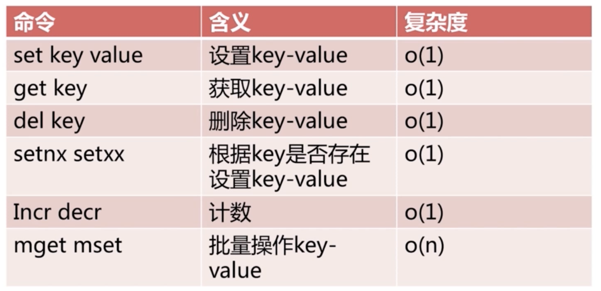
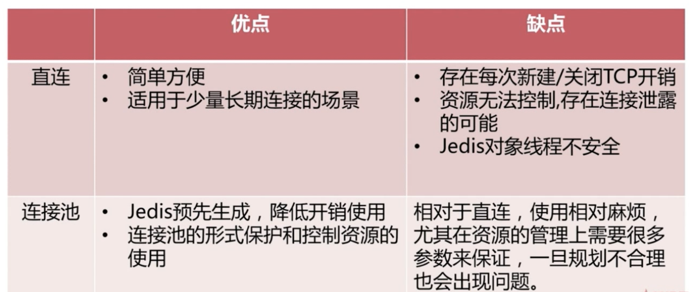
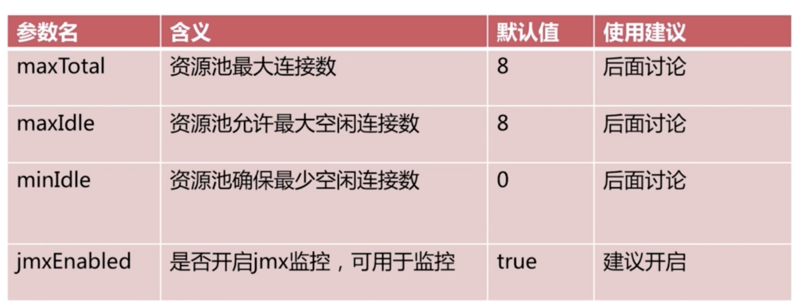

redis初识
redis是什么
- 开源
- 基于健值的存储服务系统
- 多种数据结构
- 高性能、功能丰富
redis特性
- 速度快（官方：10w OPS）
数据存在内存中（速度快的主要原因）
C语言编写
单线程
- 持久化（断电不丢数据）
redis所有数据保存在内存中，对数据的更新将异步的保存到磁盘上
- 多种数据结构
- 支持多种编程语言
- 功能丰富
- 简单
- 主从复制
- 高可用、分布式
redis适用场景
redis实验环境搭建
环境准备
（1）Parallels Desktop
（2）CentOS（CentOS-7-x86_64-DVD-2003.iso）
（3）网络环境：桥接网络（WI-FI）
- 修改主机名
1 | vi /etc/hostname |
redis下载与安装
1 | # 确保wget可以使用 |
启动方式一：在任意目录下启动redis（默认启动方式，非守护进程）
1 | redis-server |
启动方式二：在任意目录下使用redis客户端连接redis
1 | 动态参数启动redis |
启动方式三：配置文件方式启动（建议在生产环境使用这种方式）
准备工作
1 | 配置文件方式启动 |
1 | vim redis-6382.conf |
1 | cd /opt/soft/redis |
配置文件方式启动
1 | redis-server config/redis-6382.conf |
Redis API的理解和使用
- 通用命令
- 字符串类型
- 哈希类型
- 列表类型
- 集合类型
- 有序集合类型
通用命令
1 | # 计算数据库中所有的健，一般不在生产环境使用，O(n)的命令 |
- 数据结构和内部编码
- 单线程架构
字符串
- 对于redis来说所有的key都是字符串
value限制512M
使用场景
缓存、计数器、分布式锁
- 字符串总结

hash
- 使用场景
每个用户主页访问量
- 与String对比

- hash总结

list
redis客户端
- jedis和jedis连接池

- 资源池配置
